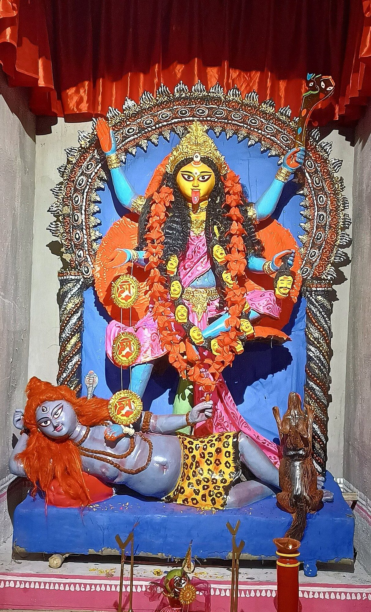

Chapter 4: The Śākta Tantras: Traditions of the Goddess¶
Saundaryalaharī 1 (attributed by tradition to Śaṅkara)
śivaḥ śaktyā yukto yadi bhavati śaktaḥ prabhavituṃ
na ced evaṃ devo na khalu kuśalaḥ spanditum api
Śiva, when united with Śakti, is able to create; otherwise the god cannot even stir.
4.1 Introduction¶
The Śākta traditions worship the supreme reality as the Goddess (Devī, Mahādevī) or as Śakti, “Power”. Śākta Tantra is not a single school but a family of lineages — the Kaula traditions, the Kālī-centred Krama, the Kubjikā cult, Śrīvidyā, the worship of the Mahāvidyās, and the regional traditions of Bengal, Assam, Kerala and Nepal — most of which grew out of the goddess-centred scriptures of the Śaiva Bhairava tradition (Sanderson 1988; Goudriaan and Gupta 1981). For Śākta theologians, Śakti is the dynamic aspect of the absolute without which, as the opening verse of the Saundaryalaharī quoted above puts it, Śiva “cannot even stir”. The Brahmā hymn of the Devīmāhātmya addresses her as the power of whatever exists, real or unreal.
4.2 Historical Development¶
4.2.1 Antecedents¶
Goddesses are present in the earliest Indian sources, though not yet as a supreme deity. Female terracotta figurines from Indus Civilisation sites have often been read as “mother goddesses”; the interpretation is possible but unproven, since the Harappan script is unread and continuity with later goddess cults cannot be demonstrated. The Ṛgveda praises Aditi, Uṣas (Dawn), Vāc (Speech), Pṛthivī (Earth), Rātrī (Night) and others, and the Śrīsūkta belongs to its later supplementary hymns, but goddesses are marginal in Vedic religion beside the gods. The Kena Upaniṣad has Umā Haimavatī reveal Brahman to the gods; the epics and early Purāṇas know Durgā, the slayer of the buffalo demon, and the fierce Mothers (mātṛs); and images of Mahiṣāsuramardinī survive from the Kuṣāṇa period.
4.2.2 The Devīmāhātmya¶
The Devīmāhātmya (also called Durgāsaptaśatī or Caṇḍī), composed around the fifth or sixth century and preserved in the Mārkaṇḍeya Purāṇa, is the first Sanskrit text to present the Goddess as the supreme reality (Coburn 1984). Its thirteen chapters, traditionally counted as seven hundred verses, present her:
-
as the supreme power, the source of all the gods’ energies;
-
as the warrior goddess who destroys the demons Madhu and Kaiṭabha, Mahiṣa, and Śumbha and Niśumbha;
-
as Mahāmāyā, the great delusion that binds beings, and simultaneously as the knowledge (mahāvidyā) that frees them.
Later appendices (the “secrets”, rahasyas) associate its three episodes with three forms, Mahākālī, Mahālakṣmī and Mahāsarasvatī. Its place in the Purāṇic corpus and its narrative are treated in Volume 7, Itihāsa–Purāṇa; what matters here is its afterlife in Śākta ritual. Tantric manuals turned the text into a liturgy: its recitation (pāṭha) is framed by preliminary hymns, by the placing of mantras on the reciter’s body and by the nine-syllable mantra of Cāmuṇḍā, and its verses are used as mantras in fire offerings. Bhāskararāya’s Guptavatī reads it through Śrīvidyā (Chapter 5), and the hymn to Nārāyaṇī in its eleventh chapter supplies some of the most widely recited prayers of goddess worship. Its recitation is the centre of the autumn Durgā worship throughout India (Chapter 9).
4.2.3 From Bhairava Tantras to Śākta Traditions¶
The goddess-centred Śaiva scriptures of the Vidyāpīṭha — such as the Brahmayāmala (or Picumata), the Siddhayogeśvarīmata and the Jayadrathayāmala — centre on fierce goddesses and on the cult of the yoginīs, powerful female beings worshipped in cremation grounds. From these, between about the eighth and eleventh centuries, developed the Kaula traditions and the four “transmissions” (āmnāyas) in which later Śākta cults are organised: the Trika, the Kālī-centred Krama, the cult of Kubjikā, and the cult of Tripurasundarī that became Śrīvidyā (Sanderson 1988, 2009).
4.3 The Ten Mahāvidyās¶
The group of ten “Great Knowledges” (daśa mahāvidyā) is a relatively late development: the earliest lists appear in Purāṇas and Tantras of roughly the twelfth to sixteenth centuries, and the composition of the group varies (Kinsley 1997). The best-known list combines goddesses of very different character, from the beautiful Tripurasundarī to the self-decapitated Chinnamastā and the widowed Dhūmāvatī. Table 4.1 follows the most common list, which is usually headed by Kālī; Tripurasundarī is also called Ṣoḍaśī.
| Mahāvidyā | Iconography and associations |
|---|---|
| Kālī | Dark, naked, garlanded with severed heads, standing on the corpse-like Śiva; time and death; in Bengali devotion also a loving mother |
| Tārā | Fierce blue goddess standing on a corpse; derived in part from the Buddhist Tārā, whose fierce forms (e.g. Ekajaṭā) were adopted by Hindu Śāktas; worshipped at Tārāpīṭh in Bengal |
| Tripurasundarī | “Beautiful in the three worlds”, also called Ṣoḍaśī and Lalitā; the goddess of Śrīvidyā (Chapter 5) |
| Bhuvaneśvarī | “Mistress of the worlds”; benign, associated with the manifest cosmos |
| Bhairavī | Fierce goddess, consort of Bhairava |
| Chinnamastā | Holds her own severed head, which drinks the blood spurting from her neck, while two attendants drink from the other streams; she stands on a copulating couple. Interpreted as self-sacrifice, as the cycle of life and death, and in yogic terms as the rising of kuṇḍalinī |
| Dhūmāvatī | “The smoky one”, an old widow riding a crow; inauspiciousness, poverty and misfortune |
| Bagalāmukhī | Pulls the tongue of a demon; associated with the power to paralyse (stambhana) enemies |
| Mātaṅgī | Associated with outcastes and with pollution (she accepts leftover food), and also with speech, music and learning |
| Kamalā | “She of the lotus”, a Tantric form of Lakṣmī; prosperity |
Kinsley stresses that the group deliberately juxtaposes the auspicious and the inauspicious: it includes goddesses associated with death, pollution, social marginality and misfortune alongside goddesses of beauty and prosperity, expressing the Śākta conviction that the Goddess is present in the whole of reality, not only in its pleasant aspects (Kinsley 1997). Several of the goddesses are also invoked in rites for worldly ends — subjugation, paralysis of enemies and the like — which form part of the Tantric repertoire of “six acts” (ṣaṭkarmāṇi).
4.4 The Śākta Pīṭhas¶
The Śākta pīṭhas (“seats” of the Goddess) are sacred sites spread across South Asia. The best-known myth explaining them tells how Śiva carried the corpse of his wife Satī, who had immolated herself at her father Dakṣa’s sacrifice, and how Viṣṇu’s discus cut the body into pieces, which fell to earth at different places. Early Tantras know four principal pīṭhas (Oḍḍiyāna, Jālandhara, Pūrṇagiri and Kāmarūpa); later lists give 51, 52 or 108, and they differ in the sites and in the body-parts assigned to them (Table 4.2).
| Pīṭha | Location | Body part | Goddess |
|---|---|---|---|
| Kāmākhyā | Guwahati, Assam | Yoni | Kāmākhyā |
| Vārāṇasī | Uttar Pradesh | Ear-ring | Viśālākṣī |
| Kālīghāṭ | Kolkata | Toes of the right foot | Kālikā |
| Jvālāmukhī | Himachal Pradesh | Tongue | Jvālāmukhī (natural gas flames) |
| Hiṅglāj | Balochistan, Pakistan | Crown of the head | Koṭṭarī / Hiṅgulā |
| Jaśoreśvarī | Bangladesh | Palms and soles | Jaśoreśvarī |
4.4.1 Kāmākhyā¶
The temple of Kāmākhyā on Nīlācala hill in Guwahati is the most celebrated Śākta pīṭha. The sanctum contains no anthropomorphic image but a natural cleft in the rock, kept moist by a spring, worshipped as the yoni of the Goddess. The annual Ambubācī festival marks the Goddess’s menstruation: the temple is closed for three days and reopens with great celebration. Kāmākhyā was historically associated with animal sacrifice and with Kaula practice; its history, its royal patrons and the texts that describe it are treated in Section 13.4 (Urban 2010).
4.5 Major Śākta Texts¶
4.5.1 The Kulārṇava Tantra¶
The Kulārṇava Tantra (“Ocean of the Kula”), in seventeen chapters (ullāsas), is probably a work of about the twelfth to fourteenth century and was widely influential in North and East India. It deals with the guru and initiation, the superiority of the Kula path, the Kaula ritual including its use of wine and meat, the conduct of initiates and the stages of attainment. Its second chapter ranks the paths in an ascending hierarchy: Vedic, Vaiṣṇava, Śaiva, Dakṣiṇa, Vāma, Siddhānta and, highest of all, Kaula. Like many Kaula texts it also insists that the Kaula ritual is for initiates only and condemns those who drink and indulge without the inner discipline it requires.
4.5.2 The Mahānirvāṇa Tantra: A Late Text¶
The Mahānirvāṇa Tantra (“Tantra of the Great Liberation”) was the first Tantra to be widely known in English, through Arthur Avalon’s translation of 1913 (Avalon 1913). For Woodroffe and many readers after him it represented authentic, ancient Tantra in a socially progressive and philosophically Vedāntic form. Historical scholarship has shown it to be a late work. J. Duncan M. Derrett argued that it was composed in Bengal in the late eighteenth century, probably in the 1770s or 1780s, and that its legal chapters were shaped by the needs of the early British courts, which were then seeking “Hindu law”; it has been associated with the circle of Hariharānanda Bhāratī, the Tantric teacher of the reformer Rammohun Roy, who cited it (Derrett 1977; Urban 2003). Its rationalised ritual, its restriction of the transgressive elements and its monotheistic theology reflect that colonial setting. It is therefore valuable evidence for modern Bengali Tantra, not for the early history of the tradition.
4.5.3 Other Important Śākta Texts¶
Table 4.3 lists some other important Śākta texts.
| Text | Approximate date | Content |
|---|---|---|
| Brahmayāmala (Picumata) | c. 7th–8th c. | Vidyāpīṭha scripture of Kapālīśa Bhairava and the goddess Caṇḍā Kapālinī; yoginī cult (Hatley 2018) |
| Kaulajñānanirṇaya | c. 9th–11th c. | Early Kaula text ascribed to Matsyendranātha |
| Kubjikāmata | c. 10th c. | Scripture of the goddess Kubjikā |
| Vāmakeśvarīmata / Nityāṣoḍaśikārṇava | c. 10th–11th c. | Early scripture of the cult of Tripurasundarī |
| Yoginīhṛdaya | c. 10th–12th c. | Inner doctrine of Śrīvidyā |
| Śāradātilaka of Lakṣmaṇadeśika | c. 11th c. | Influential compendium of mantra and ritual |
| Kālikā Purāṇa | c. 10th–11th c. | Goddess worship in Assam; Kāmākhyā; sacrifice |
| Kulārṇava | c. 12th–14th c. | Kaula doctrine and ritual |
| Tantrarāja | c. 14th c. | Śrīvidyā ritual |
| Phetkāriṇī, Yoginī Tantra, Rudrayāmala (various texts so named) | c. 14th–17th c. | Bengali and Assamese Śākta works; the extant texts called Rudrayāmala are late |
| Mantramahodadhi of Mahīdhara | 1589 | Compendium of mantras |
4.6 The Kaula Tradition¶
The word kula means “family” or “clan”. In the Kaula traditions it refers to the clans of goddesses, Mothers and yoginīs into which initiates are born by initiation, and, by extension, to the totality of powers that make up reality and the body. The Kaula traditions appear to have developed between the eighth and eleventh centuries from the cremation-ground cults of the Vidyāpīṭha, in a form that could be practised by householders (Sanderson 1988).
4.6.1 What the Kaula Sources Prescribe¶
The Kaula texts describe a ritual very different from the purity-centred worship of the Siddhānta or the Vaikhānasa. Their characteristic features include:
-
Worship in the circle (cakra): the worship of the goddess and her retinue by a group of initiates, often at night, in which caste distinctions are suspended for the duration of the rite.
-
Impure substances: offering and consuming alcohol and meat, substances forbidden to orthodox Brahmins, as sacraments.
-
Sexual ritual: ritual union with a female partner (dūtī, śakti), who is worshipped as the goddess; in many sources the sexual fluids produced are themselves offered to the deities and consumed.
-
Yoginīs: the belief that initiates could encounter, propitiate and gain powers from yoginīs, who were thought to possess human women and to fly.
-
Secrecy and dual identity: the famous maxim that one should be “a Kaula inwardly, a Śaiva outwardly and a Vedic in social conduct” expresses the expectation that initiates would conceal their practice and observe orthodox norms in public.
4.6.2 Interpreting Kaula Ritual: Sanderson and White¶
Modern scholarship does not support either of the two popular images of Kaula Tantra: the colonial image of mere debauchery, or the apologetic image (from Woodroffe onwards) in which the “five Ms” were always purely symbolic. Both Alexis Sanderson and David Gordon White, despite their differences, treat the transgressive rites as real practices described in the texts.
Sanderson has shown that the Kaula ritual is a “domesticated” form of the Kāpālika cremation-ground cult. In the Kashmiri Trika, as expounded by Abhinavagupta in Tantrāloka 29, the secret Kaula ritual with a consort and with wine and meat is retained and literally performed, but it is interpreted in an “aestheticised” way: the intensified pleasure of the senses and the breaking of the inhibitions of purity (śaṅkā) are means of dissolving the limited self and realising the expansive bliss of consciousness that is Śiva. In Sanderson’s analysis the deliberate violation of Brahmanical purity rules is the heart of the matter: the initiate demonstrates that he is free from the contracted, purity-bound identity of the orthodox householder (Sanderson 1988).
White argues that the earliest Kaula practice was centred on the yoginīs and on the production, offering and consumption of sexual and other bodily fluids — the “clan fluid” (kuladravya) — through which initiates were thought to enter the family of the goddesses and gain their powers. On his reading, the high-caste exegetes of Kashmir later transformed this “hard-core” ritual into a semiotic and aesthetic discipline of consciousness, and later still the practice was further internalised or replaced by substitutes. White also emphasises that the modern Western notion of “Tantric sex” as a technique of erotic fulfilment has little to do with the medieval sources (White 2003).
Other scholars add qualifications. Christian Wedemeyer, writing on the Buddhist Yoginītantras, argues that the transgressive acts were tightly scripted ritual performances, carried out by relatively few initiates, whose meaning lay in their deliberate inversion of norms; they were not evidence of a marginal counter-culture (Wedemeyer 2013). Hugh Urban has traced how both European and Indian writers in the colonial period constructed “Tantra” as the dark other of a rational Hinduism, and how reformers such as Woodroffe responded by sanitising it (Urban 2003).
Scholarly Note: Literal, Substituted and Interiorised
Over time the Kaula rites were transformed in three ways, which coexisted. Some lineages continued to perform them literally. Others replaced the substances by substitutes (milk, ginger, sesame and the like for wine and meat; worship of the consort without intercourse). Others again, especially the “right-handed” (samayācāra) Śrīvidyā of South India, rejected external transgressive practice entirely and reinterpreted the rites as inner yoga. These developments are historical, and the later symbolic interpretations should not be read back into the earlier texts.
4.6.3 The “Five Ms”¶
Later Śākta sources sum up the Kaula sacraments as the “five Ms” (pañcamakāra): madya (wine), māṃsa (meat), matsya (fish), mudrā (parched grain, though in some texts the word may denote the female partner) and maithuna (sexual union). The table summarises the three ways in which they came to be treated.
| Element | Literal | Substitutes (later texts) | Interiorised reading (later texts) |
|---|---|---|---|
| Madya | Wine or spirits | Milk, coconut water | The nectar that flows from the crown in yoga |
| Māṃsa | Meat | Ginger, sesame, pulses | Restraint of speech; offering of merit and demerit |
| Matsya | Fish | Radish, red sesame | The two breaths moving in the left and right channels |
| Mudrā | Parched grain | Rice or wheat | Abandoning bad company; a state of inner absorption |
| Maithuna | Sexual union | Offering of flowers; worship of the consort without union | Union of kuṇḍalinī with Śiva at the crown |
4.6.4 Dakṣiṇācāra and Vāmācāra¶
Later Śākta texts sort practice into two orientations. “Right-hand” or “southern” conduct (dakṣiṇācāra) worships with pure offerings, mantra and meditation and conforms to orthodox purity rules; it is open to most initiates. “Left-hand” conduct (vāmācāra; vāmā also means “woman”) involves the five Ms, actual or substituted, and the worship of women, and the texts restrict it to advanced initiates under a guru. They treat it as powerful, dangerous and secret; some lineages practised it literally; its stated purpose was liberation and power through transcending the dualities of pure and impure; and the same sources condemn those who indulge without discipline.
4.7 Goddess Worship: Festivals and Regional Traditions¶
4.7.1 Navarātri and Durgā Pūjā¶
The nine-night festival of Navarātri, celebrated in spring and, more importantly, in autumn, is the principal public festival of the Goddess. Its forms vary greatly: in Bengal it culminates in the Durgā Pūjā (Section 9.9); in Gujarat it is celebrated with communal dance; in much of South India dolls are displayed and the last three nights are associated with Durgā, Lakṣmī and Sarasvatī in turn. The tenth day, Vijayādaśamī, celebrates the victory of the Goddess (and in North India of Rāma). Its royal form is described in Section 12.5.
4.7.2 Bengal¶
Bengal has been a heartland of Śākta worship since at least the later medieval period. Kālī is worshipped there as the supreme reality and, increasingly from the eighteenth century, as a loving mother, and her autumn festival is one of the great occasions of the Bengali year (Figure 4.1). The devotional songs (śākta padāvalī) of Rāmprasād Sen (18th century) and Kamalākānta Bhaṭṭācārya (c. 1769–1821) turned Tantric themes into intimate devotion. Its great shrines include Kālīghāṭ in Kolkata, Tārāpīṭh with its cremation-ground ascetics, and Dakṣiṇeśvar, where Rāmakṛṣṇa (1836–1886) served as priest and practised Tantric discipline under a female guru (Section 4.14.3). Much Bengali goddess worship, all the same, is village and household religion only loosely connected with the Sanskrit Tantras (McDaniel 2004); the region’s digests, poets and patrons are described in Section 13.3.


4.7.3 Village Goddesses¶
Much goddess worship in India takes place outside the Sanskrit Tantric framework altogether. Every village has its goddesses (grāmadevatās) — in Tamil Nadu, for example, Māriyammaṉ, associated with rain and with epidemic diseases such as smallpox, and the many local “mothers” (ammaṉ) — who protect the community’s boundaries and are worshipped with festivals, processions, possession and, in many places, animal sacrifice, often by non-Brahmin priests. Over the centuries such goddesses were frequently identified with Durgā, Pārvatī or Kālī, and their temples sometimes brought under Brahmin priesthood and Āgamic ritual; but much village worship retains its own forms. The relation between the learned Śākta Tantras and this popular religion is one of continual exchange rather than of a single tradition (Kinsley 1997; McDaniel 2004).
4.7.4 Assam¶
Besides Kāmākhyā, Assam produced two texts, the Kālikā Purāṇa and the Yoginī Tantra, which reflect its goddess worship, including blood sacrifice and the patronage of the Koch and Ahom kings (Section 13.4).
4.7.5 Kerala¶
In Kerala the fierce goddess Bhadrakālī is worshipped in temples and in sacred groves (kāvu), often by non-Brahmin priests. In the teyyam of North Kerala, performers of low-status communities embody deities, including forms of the Goddess, and are worshipped by all castes for the duration of the performance. The Bhagavatī temple of Koṭuṅṅallūr is known for its Bharaṇi festival, with its ritual abuse and its former offerings of cocks, and at the annual Āṟṟukāl Poṅkala in Thiruvananthapuram very large numbers of women cook offerings for the Goddess. In the temples, meanwhile, Brahmin tantrīs worship her with the right-hand rites of the regional Tantrasamuccaya (Section 13.2).
4.7.6 Nepal¶
In the Kathmandu Valley, Hindu and Buddhist Tantric traditions have coexisted for more than a millennium and preserve forms of worship that disappeared elsewhere. The Malla kings (13th–18th centuries) took as their tutelary deity Taleju, a goddess identified with Durgā, whose temples stand beside the old royal palaces of Kathmandu, Patan and Bhaktapur and whose inner shrines are closed to all but initiates. Newar Hindu Tantric ritual is performed by Rājopādhyāya Brahmins and by Karmācārya priests, and the cult of Kubjikā, otherwise largely extinct, survives among the Newars. The best-known Newar goddess cult is that of the Kumārī: a young girl of the Buddhist Śākya caste is chosen to serve as the living embodiment of the goddess, identified with Taleju, until she reaches puberty, and the royal Kumārī of Kathmandu presides over the festival of Indra Jātrā (Allen 1975; Gellner 1992). The Newar Buddhist Tantric tradition is described in Chapter 10, and further aspects of Newar Tantra in Section 13.6.
4.8 Śākta Mantra¶
Śākta practice centres on mantras, especially monosyllabic “seed” (bīja) mantras, which are regarded as the goddess’s own sonic body: hrīṃ, the “Māyā” seed of Bhuvaneśvarī; krīṃ, the seed of Kālī; klīṃ, the seed of desire; aiṃ, the seed of speech; strīṃ, the seed of Tārā; and hlīṃ, associated with Bagalāmukhī and the power to paralyse. They are traditionally received only through initiation, and their associations are recorded here, and in Table 7.2, for information, not as instructions for practice.
4.9 Śākta Theology¶
4.9.1 Power and Consciousness¶
Śākta theology inherits from the non-dual Śaiva traditions the doctrine that reality is consciousness endowed with power, and gives priority to the power. The three powers of will (icchā), knowledge (jñāna) and action (kriyā) are described as the Goddess’s own modes, and in Śrīvidyā they are correlated with the three sections of her mantra and the triangles of her diagram.
4.9.2 Māyā as the Goddess¶
Whereas Advaita Vedānta treats māyā as the inexplicable ignorance that veils Brahman, Śākta theologians identify it with the creative power of the Goddess herself. The Devīmāhātmya calls her both Mahāmāyā, who deludes beings, and the knowledge that frees them. The world is accordingly not an illusion to be negated but the Goddess’s real manifestation and play (līlā), to be recognised as such. This is the basis of the Tantric combination of worldly enjoyment (bhukti) and liberation (mukti).
4.9.3 The Body and Kuṇḍalinī¶
Śākta traditions treat the body as a microcosm of the cosmos and of the Goddess’s diagram: the Bhāvanā Upaniṣad systematically identifies the parts of the human body with the enclosures of the Śrīcakra. The Goddess is also present in the body as kuṇḍalinī, the coiled power that, in the later yoga described in the Ṣaṭcakranirūpaṇa, sleeps at the base of the trunk, is awakened by yoga, rises through the cakras, and unites with Śiva at the crown (Avalon 1919).
4.10 The Yoginī Cult and Its Temples¶
The yoginīs — groups of fierce, often animal-headed female deities, frequently counted as sixty-four — were central to the Vidyāpīṭha and Kaula traditions. Between about the ninth and twelfth centuries kings and local rulers in central and eastern India built distinctive open-air temples for them, usually circular (Dehejia 1986):
| Site | Location | Date (c.) | Features |
|---|---|---|---|
| Hirapur | Odisha | 9th–10th c. | Small circular hypaethral temple with sixty-four yoginī images |
| Ranipur-Jharial | Odisha | 9th–10th c. | Large circular temple with sixty-four niches |
| Khajuraho | Madhya Pradesh | late 9th c. | Rectangular open-air yoginī temple, the earliest at Khajuraho |
| Mitaoli (Morena) | Madhya Pradesh | 11th c. | Large circular temple with sixty-four cells and a central shrine |
| Bheraghat (Jabalpur) | Madhya Pradesh | 10th–11th c. | Circular temple with eighty-one niches |
4.10.1 Yoginīs in the Scriptures: The Brahmayāmala¶
The fullest early account of the yoginī cult is found in the Brahmayāmala or Picumata, the oldest surviving scripture of the Vidyāpīṭha (Section 2.5). In its surviving form it is a very large text of more than a hundred chapters, preserved in Nepalese manuscripts, the oldest of them copied in the eleventh century; the first volume of Shaman Hatley’s critical edition, together with his earlier study of the text, has opened the early yoginī cult to detailed study (Hatley 2007, 2018).
The Brahmayāmala addresses the sādhaka, the initiate who seeks supernatural powers. Having been initiated into the cult of Kapālīśabhairava and the goddess Caṇḍā Kapālinī, he undertakes a series of observances (vratas) of increasing intensity, many of them performed in cremation grounds and other places frequented by yoginīs, with offerings that include blood, meat and alcohol. The culmination of his practice is the “meeting” (melaka) with the yoginīs: if his practice is perfect, they appear to him and grant him powers, above all the power of flight and the status of a divine being who roams the sky with them; if it fails, the same goddesses may destroy him. The yoginīs are thus both the source of power and its greatest danger.
Initiation also places the initiate in a “clan” (kula, gotra). In the initiation ceremony the blindfolded candidate casts a flower onto the maṇḍala; the deity on which it falls determines the family of goddesses to which he belongs, and so the yoginīs who are his kin. Kaula and Vidyāpīṭha texts teach secret signs (chommā) — gestures and code words — by which initiates and yoginīs recognise one another. Hatley has also drawn attention to passages in which women appear as practitioners in their own right, a reminder that the word yoginī could denote human women as well as goddesses (Hatley 2007).
4.10.2 Who Were the Yoginīs?¶
The yoginīs drew together several older figures. One was the group of “Mothers” (mātṛ), female deities attested in sculpture from the Kuṣāṇa period and later standardised as the seven or eight Mothers who accompany Śiva or the Goddess in battle. Another was the host of female spirits — seizers (grahas) dangerous to children and pregnant women, and witches who feast on human flesh — feared in medical and narrative literature. A third was the human woman of power, the female ascetic or ritual partner. In the scriptures and in story literature such as Somadeva’s Kathāsaritsāgara (11th century), the yoginīs gather at night in cremation grounds, fly through the air, change shape and consume the vital essence of their victims; to the initiate who can master them they are protectresses and givers of power (White 2003; Keul 2013).
The number sixty-four (eight times eight) is a classificatory ideal rather than a fixed list. Vidya Dehejia’s comparison of the lists of yoginī names in texts and on temple images found that they rarely agree, and that each temple seems to have followed its own tradition (Dehejia 1986). Buddhist Tantra developed a parallel figure, the ḍākinī, who plays a similar role in the Yoginītantras (Chapter 10).
4.10.3 The Temples and Their Patrons¶
The open-air temples listed above translate the yoginī cult into architecture. Their circular plan reproduces the “circle” (cakra) of goddesses described in the scriptures, with the images set in niches around the inner face of the enclosing wall, facing a central shrine that housed, in several cases, a form of Bhairava or Śiva. The temples are roofless (hypaethral), and Dehejia related this to the yoginīs’ power of flight: the goddesses are imagined as descending into their circle from the sky (Dehejia 1986).
The images themselves are among the finest sculptures of their time. At Hirapur, near Bhubaneswar, the small stone yoginīs stand on their vehicles — animals, birds, demons, severed heads — some with animal faces, many with the graceful bodies and ornaments of court sculpture. At Bheraghat, on the Narmadā near Jabalpur, the larger seated images bear inscribed names on their pedestals, and a later shrine of Śiva and Pārvatī now stands in the courtyard.
Who built these temples, and for what purpose? Inscriptions are scarce, but the temples are associated with the ruling houses of their regions — the Kalacuris at Bheraghat, the Candellas at Khajuraho, the Kacchapaghātas in the Gwalior region, and the dynasties of early medieval Odisha. The scriptures promise that the yoginīs can grant victory and protection, and royal patronage of their cult is best understood in the light of the Śaiva services to kings discussed in Chapter 12: the circle of goddesses was a source of power that a king might wish to have at his disposal. Several temples now stand in ruins, and many images have been removed to museums or lost to theft; at Hirapur the yoginīs continue to receive worship from local devotees.
4.11 The Four Transmissions¶
Later Śākta and Kaula literature organises its cults into “transmissions” (āmnāyas) associated with the directions (Sanderson 1988; Goudriaan and Gupta 1981):
-
The Eastern transmission (pūrvāmnāya): associated with the Trika and the cult of the three goddesses Parā, Parāparā and Aparā (Chapter 6).
-
The Northern transmission (uttarāmnāya): the cult of Kālī, systematised in the Krama of Kashmir, with its sequences of goddesses through which consciousness devours objectivity.
-
The Western transmission (paścimāmnāya): the cult of the hunchbacked goddess Kubjikā (see below).
-
The Southern transmission (dakṣiṇāmnāya): the cult of Tripurasundarī, which became Śrīvidyā (Chapter 5).
Later still, a fifth, “upper” transmission was added, and lists vary from text to text. The scheme shows how the various goddess cults came to see themselves as parts of one Kaula family.
4.11.1 The Western Transmission: Kubjikā¶
Of the four transmissions, the cult of Kubjikā, the “hunchbacked” or “crooked” goddess, is the least known outside Nepal, though its literature is large and comparatively well preserved. Its root scripture, the Kubjikāmata (also called the Kulālikāmnāya), probably of the tenth century, has been critically edited by Teun Goudriaan and Jan Schoterman (Goudriaan and Schoterman 1988); a large body of later works expands it, among them the Ṣaṭsāhasrasaṃhitā (“Collection of Six Thousand Verses”), whose opening chapters Schoterman edited (Schoterman 1982). Mark Dyczkowski’s survey of the canon shows how these texts place themselves in the “western house” of the Kaula system and rework the older scriptures of the Vidyāpīṭha and the Trika into a new system with its own deities, mantras, lineages and yoga (Dyczkowski 1988).
The goddess’s crooked form is read in the tradition as the coiled power within the body: Kubjikā is the power that lies curled at the base of the body and, straightened by yoga, rises to unite with Śiva above. Her cult therefore gave great weight to the yoga of the subtle body. Its texts map a series of centres (cakras) along the axis of the body, each with its deities and, in some texts, a sacred site of its own, so that the practitioner’s body becomes a map of sacred geography; scholars have traced to this tradition one of the earliest systems of six centres resembling the scheme that later became standard (Section 2.13.2) (Dyczkowski 1988; White 2003). The ritual of the cult, conducted in maṇḍalas of the goddess and her retinue, combines Kaula worship with a strong emphasis on the lineage of teachers through whom the teaching descends.
Almost extinct in India, the cult of Kubjikā survives among the Newars of the Kathmandu Valley, where her initiations are still given and her texts copied (Section 13.6). Its Nepalese manuscripts, which preserve both the root scripture and its many derivatives, are one reason why the later history of Kaula Tantra can now be studied in more detail than its earlier phases.
4.11.2 Kālī in Bengal¶
The Kālī worship that is so prominent in Bengal today took its familiar form only in the early modern period. Bengali tradition credits Kṛṣṇānanda Āgamavāgīśa, compiler of the influential ritual digest Tantrasāra (late 16th or 17th century), with popularising the now standard image of Dakṣiṇakālī. In the eighteenth and nineteenth centuries the patronage of landholders and the devotional songs of Rāmprasād Sen and Kamalākānta made her the object of an intimate, filial devotion, in which the terrifying goddess is addressed as a loving if unpredictable mother (McDaniel 2004; Kinsley 1997). In the late nineteenth and early twentieth centuries Kālī and Durgā also became symbols of the motherland in Bengali nationalist literature and politics (Urban 2003).
4.12 Blood Sacrifice¶
Animal sacrifice (bali) to the Goddess — most often of goats and buffaloes — is prescribed in many Śākta texts; the Kālikā Purāṇa contains a chapter on blood offerings that became an authority for later practice. It has been performed at major goddess shrines such as Kāmākhyā and in village goddess worship across India, and also during Durgā Pūjā in some households and temples.
Sacrifice has always been contested. Vaiṣṇava, Jain and Buddhist critics condemned it; many Śākta lineages, especially the Śrīvidyā of the South and the Bengali devotional traditions influenced by Vaiṣṇavism, replaced animals with pumpkins, sugarcane or other substitutes; and modern reformers campaigned against it. Several Indian states have legislated against animal sacrifice in temples — Kerala in 1968, for example — while elsewhere it continues, and courts and legislatures continue to debate how to balance religious freedom, animal welfare and public order.
4.13 Gender, Caste and the Śākta Traditions¶
It is often claimed that because the Śākta traditions worship a supreme Goddess, they elevated the status of women. The evidence points in more than one direction (Kinsley 1997; White 2003). Many Kaula and Śākta texts command reverence for women as embodiments of the Goddess, forbid harming or insulting them and allow them to be initiated; some lineages recognised women as gurus, and female practitioners (sādhikās, bhairavīs) are attested in later centuries. Yet the same texts were composed by and for men. The female partner in Kaula ritual is often described primarily as a means to the male initiate’s attainment, and some texts prefer partners of low caste precisely because of their ritual impurity. Devotion to powerful goddesses has coexisted throughout Indian history with patriarchal social norms, and worship of the Goddess did not by itself bring social power to women. Caste shows a similar pattern: its suspension inside the ritual circle was combined with its observance outside, while in village India goddess worship has long been led by non-Brahmin priests and performers, as in the Kerala teyyam, and the Mahāvidyā Mātaṅgī and other figures give religious value to the socially marginal.
4.14 Women in the Tantric Traditions: Partners, Practitioners and Gurus¶
Three kinds of evidence allow these generalisations to be tested: the prescriptions of the scriptures themselves, the scattered records of historical women who practised or taught, and the ethnography of the living traditions. Each has its limits. The scriptures are normative and often idealised, and they cannot be read as descriptions of society; the historical records are few; and the ethnography concerns the present. Read together, they show women in at least three different roles, whose relative weight changed over time.
4.14.1 The Early Śākta Scriptures¶
Judit Törzsök’s study of the earliest scriptures of the goddess cults, dated between the seventh and the ninth centuries — the Brahmayāmala, the Siddhayogeśvarīmata, the Tantrasadbhāva and the Jayadrathayāmala — distinguishes three ritual roles for women, which often overlap (Törzsök 2014).
The ritual partner. The female partner, called dūtī (“messenger”) or more often simply śakti (“power”), is required only in certain rites. The Brahmayāmala prescribes her for its most advanced class of practitioner and lists the qualities she should have: she should have received the guru’s instructions, have mastered the yogic postures, be steeped in the Tantras, be devoted to guru, deity and husband, and be free from greed. Yet in the rites themselves her role is largely instrumental: in the pre-Kaula cult the chief purpose of ritual union was to produce the mingled sexual fluids that were offered to the deities and consumed (Sanderson 1988), and the woman is the means or the support of that offering rather than its agent. The commentator Jayaratha later justified her presence by a Vedic analogy: as a Brahmin must sacrifice together with his wife, so the Kaula rite requires the dūtī (Törzsök 2014).
The human yoginī. The same texts teach that certain women belong by birth to the “clans” (kula) of the seven Mothers, Brāhmī, Māheśvarī, Kaumārī, Vaiṣṇavī, Vārāhī, Aindrī and Cāmuṇḍā. The Brahmayāmala (chapter 74), the Siddhayogeśvarīmata and the Tantrasadbhāva describe how such a woman is to be recognised by her looks and behaviour — unrestrained laughter and anger are among the signs — and tested with secret hand gestures, to which she answers with a counter-gesture. Once recognised, she is to be worshipped, for she can grant powers and transmit teaching orally. The Siddhayogeśvarīmata adds that men are to be recognised in the same way, as “heroes” (vīra) fit to be partners of the yoginīs, which implies that women, too, sought out their partners (Törzsök 2014). These are the human counterparts of the divine yoginīs described in Section 4.10.
The female practitioner. Here the early Śākta scriptures differ most from the Śaiva mainstream. The Svacchandatantra (4.88) lists women, with children, the foolish, the old, kings and the sick, among those who may receive only the “seedless” initiation, which frees them from the duties of the initiate but also excludes them from the higher practice (Section 9.7). The goddess Tantras, by contrast, give women full initiation. In the Brahmayāmala initiates are divided not by caste but by sex, as “heroes” and “yoginīs”, and women receive initiation names ending in -śakti; in the Trika scriptures all initiates receive names ending in -śakti. The Siddhayogeśvarīmata prescribes its preparatory observances for “the male or female practitioner” (sādhaka, sādhakī) and allows women to undertake the propitiation of the goddess Aparā, with its fire offerings, alone or at home, exactly as men do. Of one mantra, the “Heart of the Yoginīs”, it says that it grants success chiefly to women and that it was handed down by women from mouth to mouth and not written in a book. Abhinavagupta, commenting on the Parātrīśikā, could still assume that a person initiated directly by the deity might be either a “hero” or a “yoginī” (Törzsök 2014).
The same texts also call women abalā, “the powerless”, and at times offer them easier rites as weaker practitioners. But they also promise that through practice the powerless woman becomes a powerful yoginī, just as the timid man becomes a hero. Törzsök found no explicit statement on whether women could attain final liberation by these means; since the texts treat liberation as one of the attainments of the practitioner, their silence need not imply exclusion. Literary evidence agrees with the scriptures: in Bhavabhūti’s Mālatīmādhava (early 8th century) two women, Kapālakuṇḍalā and Saudāminī, are shown as accomplished practitioners with the power of flight (Section 2.1.6).
4.14.2 The Later Kaula Texts¶
A second body of evidence comes from the Sanskrit Tantras of the fifteenth to eighteenth centuries, many of them associated with the Kālī-centred traditions of eastern India. Loriliai Biernacki has studied eight such texts and argued that they cannot be reduced either to a purely symbolic exaltation of “the feminine” or to the use of women’s bodies for male ends (Biernacki 2007). They prescribe rites in which women are honoured and worshipped as embodiments of the Goddess; they forbid the initiate to despise, strike or speak harshly to a woman; they treat women as practitioners and, in some passages, as gurus; and they attach particular power to women’s speech. At the same time Biernacki does not hide the elements that point the other way, above all the fact that the texts are still addressed mainly to men. Sanjukta Gupta had earlier surveyed the place of women in the Śaiva and Śākta ethos more broadly, including the women poets of these traditions (Gupta 1992).
4.14.3 Women Practitioners and Gurus in History¶
Historical records of women in the Tantric traditions are few, but they span the whole period covered in this volume.
-
A Pāśupata abbess. Although the Pāśupatasūtra restricts its observance to twice-born men, an inscription of the twelfth or thirteenth century from Mount Ābu names a woman Pāśupata ascetic, Yogeśvarī, as the head of a Śaiva monastery (Sanderson 2013).
-
Lallā of Kashmir. The fourteenth-century Kashmiri poet Lallā (Lal Ded), whose verses draw on the yoga and the non-dual theology of Kashmiri Śaivism (Section 6.14), is revered by Hindus and Muslims alike; her poetry is treated in Volume 8, Kāvya Kalpalatā.
-
The Bhairavī Brāhmaṇī. The woman ascetic who arrived at the Kālī temple of Dakṣiṇeśvar in 1861 guided Rāmakṛṣṇa through a long series of Tantric disciplines over the following years (Section 14.3). She is the best-documented example of a female Tantric guru with a male disciple in modern India. In 1872 Rāmakṛṣṇa in turn worshipped his wife, Śāradā Devī, as the goddess Ṣoḍaśī; she later initiated many disciples herself and is revered by the Rāmakṛṣṇa movement as the Holy Mother.
-
Women tāntrikās in modern Bengal. June McDaniel’s fieldwork in West Bengal recorded women practitioners of several kinds: renunciant bhairavīs living at cremation grounds and goddess shrines such as Tārāpīṭh, women who became gurus after visions or possession by the Goddess, and householders who combined Tantric practice with family life (McDaniel 2004). Asking whether Tantric ritual empowers women, she found that renunciants could gain independence, authority and followers, while for women who remained in the household the gains were more limited (McDaniel 2007).
The worship of young girls as the Goddess (kumārīpūjā), prescribed in many Śākta texts and performed during Navarātri and Durgā Pūjā, belongs to a different register: the girl is honoured as the Goddess for the duration of the rite, and in the case of the royal Kumārī of Kathmandu for the years before puberty (Section 4.7). It shows the readiness of the traditions to see the divine in a human female, but it gives the girl a ritual status, not a role as practitioner or teacher.
4.14.4 The Modern Debate¶
Scholarly positions on women in Tantra range widely. One position, represented for Buddhist Tantra by Miranda Shaw (Section 10.10) and for the late Kaula texts by Biernacki, stresses that women were practitioners, teachers and objects of reverence, and that the texts’ exaltation of the feminine had real consequences. Another, represented by David Gordon White and, for the early scriptures, by much of the philological work, stresses that the texts were composed by men for male practitioners, that the women they describe are often instruments of male attainment, and that the partners preferred in some rites were women of low caste, valued for the very impurity that society attributed to them (White 2003). Törzsök’s analysis suggests that both are partly right for the early period: the same scriptures that use the dūtī as a means also grant women full initiation and the right to practise for their own ends (Törzsök 2014).
Two further cautions apply. First, the evidence is uneven in time and place: what holds for the Brahmayāmala need not hold for the Śaiva Siddhānta temple or for eighteenth-century Bengal, and the temple priesthoods governed by the Āgamas remained closed to women until very recent debates (Chapter 1). Second, modern interest in the “sacred feminine”, in India and abroad, has encouraged readings of Tantra that project present-day concerns onto the sources (Section 14.4), while the authority of the guru in secret traditions has also made women vulnerable to abuse by teachers claiming Tantric legitimacy (Section 14.2). What the evidence supports is a double conclusion: these traditions opened to women religious roles that the Vedic order denied them, and they did so within a social world that remained, for the most part, governed by men.
4.15 The Seven Ācāras¶
The Kulārṇava’s ladder of seven “conducts” (ācāras), from Vedic to Kaula (Section 4.5), became standard in later Śākta texts. It is a hierarchy of religious paths with the Kaula path at its summit, not a historical description; texts disagree about the order of the higher stages, and some add further categories. Similarly the conventional number of sixty-four Śākta Tantras is ideal: the lists in different texts do not agree, and many of the works named in them are lost.
4.15.1 Purity and the Cremation Ground¶
Śākta texts repeatedly relativise external purity, declaring that what matters is the purity of the mind and that the Goddess pervades the pure and the impure alike. The practice of worship in cremation grounds (śmaśānasādhanā), inherited from the Kāpālika and Vidyāpīṭha traditions and still followed by some ascetics at sites such as Tārāpīṭh and Kāmākhyā, dramatises this principle by confronting death and impurity directly.